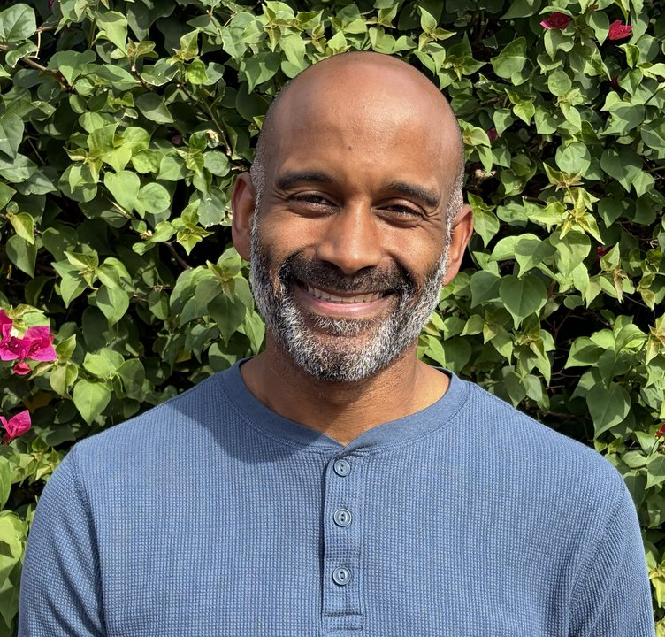

Vincent Payne, MS, Licensed Associate Counselor. Adults, teens and families.
You may find yourself having the same arguments, keeping your feelings to yourself, or wanting things to change without knowing where to start. Or you may have worked hard to build a successful career and the life you thought would make you happy, only to find that something still feels missing. It can be hard to talk about feeling empty when, from the outside, things seem to be going well. I work with adults, teens, and families to explore what they’re experiencing and what they’d like to change.
With so much information and technology available, you may have already spent a lot of time trying to figure things out. But understanding a problem doesn’t always change how it feels. Sometimes, you may not even have words for what you’re experiencing. We can use creative ways to explore those feelings and notice patterns together.
You don’t have to explain everything perfectly to be heard.
I know firsthand what it’s like to grow up in a family where safety, stability, and trust were often missing. I also understand how faith can become tangled with guilt, shame, and blame. For a long time, I carried that tension wherever I went. I found comfort and distraction in video games, Japanese anime, food, and time spent on screens. I also put a lot of energy into performing well and trying to get everything right. Over sixteen years of working through my own personal challenges and trauma, I’ve come to better understand what I needed and how I was trying to meet those needs. That experience shapes how I listen, while leaving room for your story to be different from mine.
As a Licensed Associate Counselor, my style is real and supportive, and we’ll laugh too. I’ll take time to get to know you, offer guidance, and share what I notice. My work draws from Intuitive Experiential Therapy, Dialectical Behavior Therapy (DBT), Cognitive Behavioral Therapy (CBT), motivational interviewing, and psychodrama, with attention to emotions, the body, and how earlier experiences affect your life today.
You don’t need to have everything figured out or know exactly what to say. We can start with what’s been difficult and what you’d like help with.
Call to set up a time, or book online and choose “Vincent” as your preferred provider.
602-932-0207The Rosemary Tree Therapy & Wellness Center
1102 E Missouri Ave, Phoenix, AZ 85014
Psychology Today: add your profile link